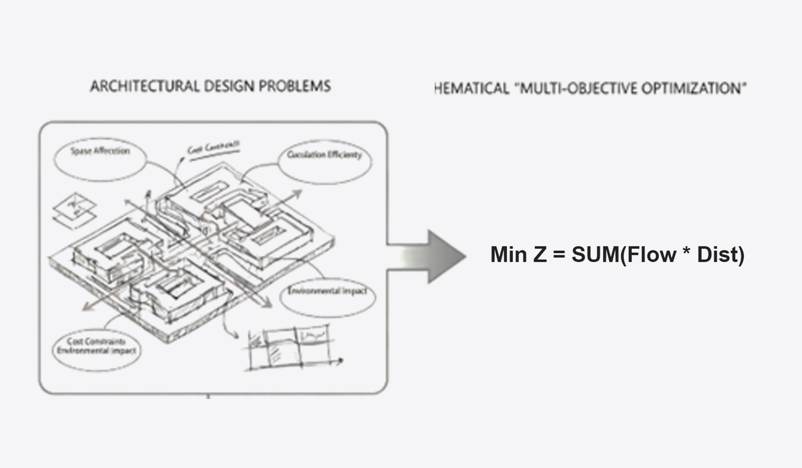
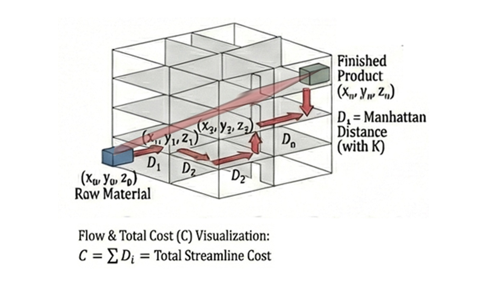
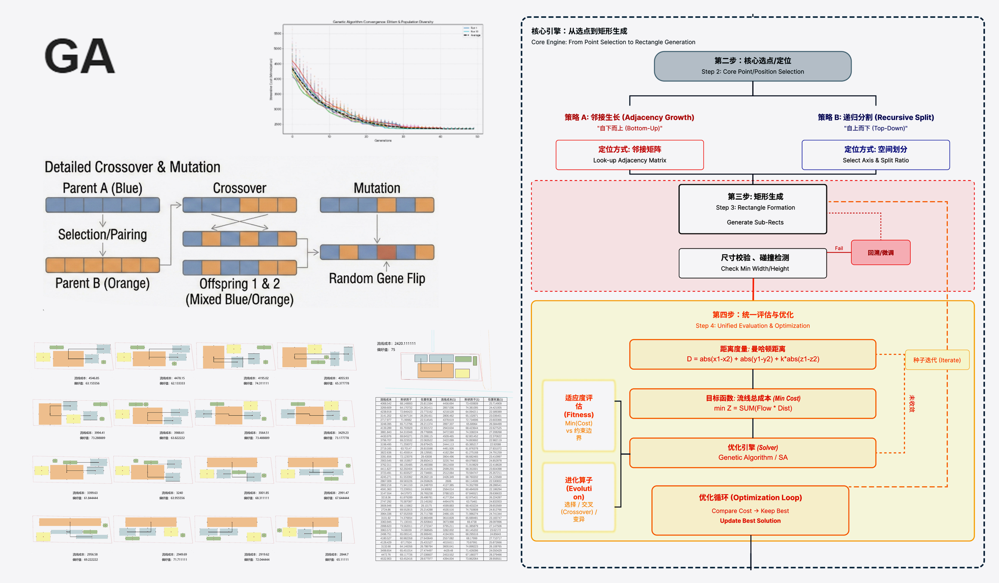
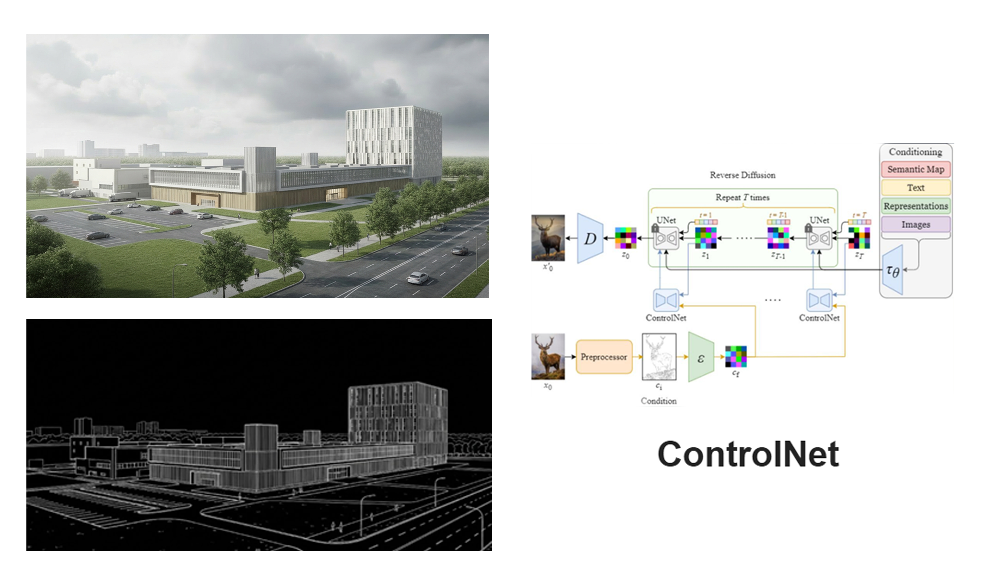

主导这款 B 端辅助决策工具的从 0 到 1。通过运筹优化算法重塑传统厂房设计流线，将交付周期从数天级压缩至小时级，显著赋能一线业务。
在深度调研一线厂房设计师的工作流后，我发现传统的半导体厂房规划极度依赖人工经验。不仅周期冗长，且难以在图纸阶段精确量化投产后的物流运输成本。
作为产品负责人，我将这个感性的工程问题抽象为了理性的数学问题。明确了工具优化的北极星指标：全生命周期运营效率最高，即“最低流线成本”。

在构建适应度评估函数（Fitness）时，团队最初考虑使用两点间的直线距离以降低算力开销。但我很快否决了这个方案。因为在真实的半导体厂房中，车间之间通常是正交的走廊，并且存在跨楼层货梯的高昂运输时间与动能消耗。
我主导将距离度量模型更改为曼哈顿距离，并在 Z 轴（楼层高度）上强制增加了一个“垂直惩罚系数 (k)”：

最强大的算法如果只有开发人员会用，就无法产生商业价值。为了解决这个问题，我重点推进了这套算法从“底层脚本”向“高可用 B 端辅助工具”的跨越。

运筹算法跑出的结果（纯色块图）对底层数据极其精准，但在面向甲方客户汇报时，却往往缺乏视觉冲击力。为了让产品具备真正的 B 端商业闭环能力，我引入了生成式 AI 工作流。
提取算法底层生成的粗糙结构线稿，将其作为 ControlNet 的控制源。配合深度定制的行业 Prompt 模型，实现无需人工干预的一键秒级渲染。
